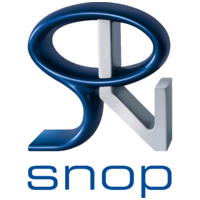

Élève ingénieur en 4ᵉ année en Informatique et Réseaux, spécialisé en Intelligence Artificielle et Data Science. Passionné par l’analyse de données, le développement logiciel et l’automatisation des systèmes, j’ai acquis des compétences solides en programmation (Python, Java, C++, C#, JavaScript), en bases de données (MySQL, MongoDB, SQL Server) et en administration Linux/Unix. Grâce à mes projets académiques et mes stages professionnels, j’ai développé des solutions web et des outils intelligents pour optimiser les processus et faciliter la prise de décision. Motivé, curieux et autonome, je recherche un stage technique stimulant où je pourrai contribuer concrètement et continuer à progresser.
Machine Learning, Analyse de données, Data Mining, Statistiques
Python, Java, C#, C++, C, JavaScript, React, PHP, Laravel, HTML, CSS
MySQL, MongoDB,NoSQL, Oracle, SQL Server
Linux / Unix, Systemd, Streamlit, StarUML

Stage ouvrier – SNOP Tanger Juillet 2025Réalisation & Compétences développées :
 Stage d’observation – ONEE (Branche Eau)
Stage d’observation – ONEE (Branche Eau)Réalisation & Compétences développées :
Objectif : Identifier des transactions financières suspectes.
Réalisation : Analyse des données, développement d’un modèle d’analyse prédictive, détection d’anomalies et visualisation des résultats.
Technologies : Python, Streamlit, MongoDB
Objectif : Estimer le prix des véhicules selon leurs caractéristiques.
Réalisation : Analyse exploratoire, algorithme de régression, entraînement du modèle et application interactive.
Technologies : Python, Streamlit, MySQL
Objectif : Gérer les réparations et les clients.
Réalisation : Gestion des clients, appareils, réparations, facturation et base de données.
Technologies : Java, MySQL
Objectif : Gérer les stocks et les ventes.
Réalisation : Gestion des produits, ventes, fournisseurs et base de données.
Technologies : C# .NET Core, SQL Server (SSMS)
Objectif : Détecter la similarité entre documents textuels.
Réalisation : Implémentation d’algorithmes de comparaison de chaînes et analyse de similarité.
Technologies : Python, MySQL
Objectif : Gérer un parc de véhicules.
Réalisation : Gestion des véhicules, maintenance, affectations et base de données.
Technologies : Python, MySQL
Objectif : Automatiser le démarrage de services critiques.
Réalisation : Scripts Bash, configuration de targets systemd, automatisation et tests.
Technologies : Linux, Bash, Systemd
Objectif : Gérer les vols et flux de passagers.
Réalisation : Implémentation de la logique métier, manipulation de structures de données.
Technologies : C++
Objectif : Modéliser le système d’une agence touristique.
Réalisation : Analyse des besoins et conception UML.
Technologies : StarUML
Objectif : Développer une application web de gestion de films.
Réalisation : Interface dynamique, gestion des films et composants React.
Technologies : React, JavaScript
Email : nassimarous@gmail.com
GitHub : github.com/NassimArous
LinkedIn : linkedin.com/in/NassimArous